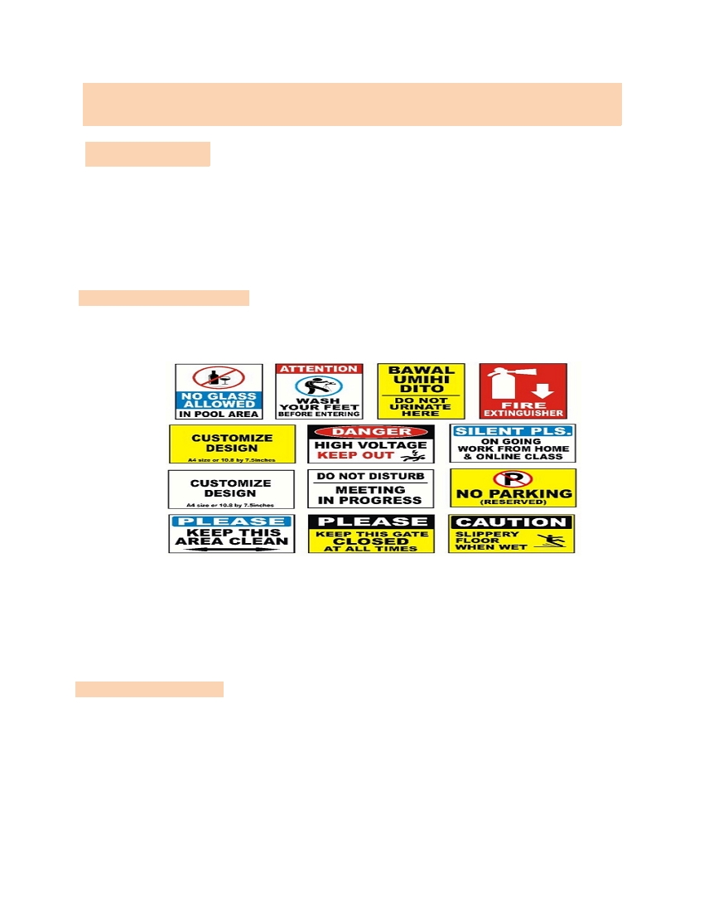
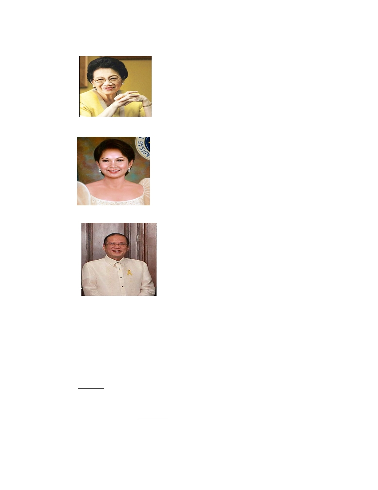
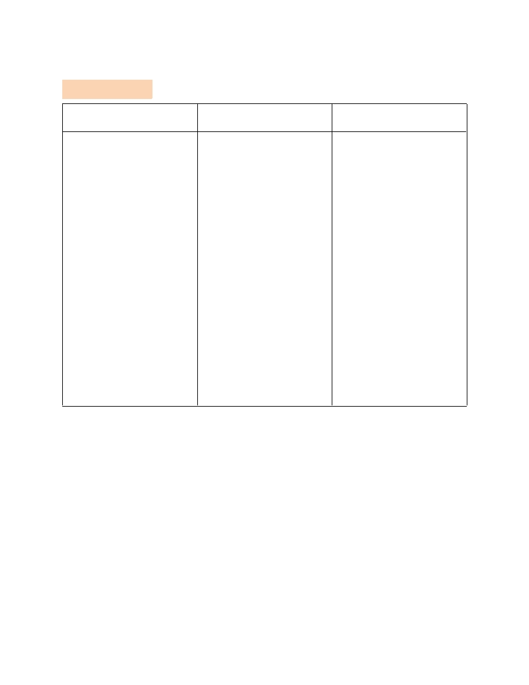

KOMFIL (Kontekstwalisadong Komunikasyon sa Filipino)
Introduksyon: Ang Pagtataguyod ng Wikang Pambansa sa Mas Mataas na
Page 1 of 6
Antas ng Edukasyon at Lagpas pa
Paksa: ANG PAGTATAGUYOD NG WIKANG PAMBANSA SA MAS MATAAS NA ANTAS NG
EDUKASYON AT LAGPAS PA
I. OBJECTIVE:
Sa pagtatapos ng aralin, ang mga mag-aaral ay inaasahang :
1.
Natatalakay ang pinagmulan ng pagkakabuo ng wikang pambansa sa mas lalong mataas na antas
nito
2.
Naihahambing ang kaibahan ng wikang Tagalog, sa wikang Filipino sa iba’t ibang gamit ng
konteksto
3.
Nakabubuo ng diskursong may kinalaman sa mga usaping pangwika
II. PRELIMINARY ACTIVITY
Panuto : Magbigay ng mga halimbawa ng Signage at panuto na hindi lubos maunawaan ito man ay nakasalin sa
Ingles o Filipino at sagutin ang mga sumusunod na gabay na tanong sa ibaba.
Gabay na tanong:
1. Ano ang suliranin na kinakaharap ng paggamit ng wikang Ingles at Filipino?
2. Bakit nasa wikang Ingles ang mga panuto na iyong nakikita sa mga kalsada, paaralan at iba pang lugar na
hindi nakasalin sa sarili nating wika?
3. Bakit mahalaga na pagtuunan ng pansin ang mga wika sa ating bansa?
III. LESSON PROPER
4.1 Ano ang Preserbasyon ng Wikang Tagalog ?
Ito ay proseso ng paghahanda at pangangalaga ng ating wika upang mapanatili ang
paggamit nito at hindi ganun kadali ang maghalo lamang.
Noong 1896- Tagalog
- Tagalog ang gamit ng mga Propagandista upang gisingin ang mga kamalayan ng mga
Pilipino laban sa mga banaga
KOMFIL (Kontekstwalisadong Komunikasyon sa Filipino)
Introduksyon: Ang Pagtataguyod ng Wikang Pambansa sa Mas Mataas na
Page 2 of 6
Antas ng Edukasyon at Lagpas pa
- Inilarawan ni Ruperto Cristobal bilang lunan ng mga wika na dayuhan na ibig
akitin ang mga walang kibong mamamayan.
Noong 1923 , Sumulat si Jose Corazon De Jesus ng “Imperyalismo” na
Nagtatangol sa katutubong wika at tinuligsa ang dulot ng wikang banyaga na nagturo sa
mga Pilipino.
Artikulo XIV, Seksyon 3 ng 1935 Konstitusyon
- “ Ang Pambansang Asemblea ay gagawa ng mg hakbang tungo sa paglinang at
pagpapatibay ng isang panlahat na wikang Pambansa na nasasalig sa isa sa mga wikang
katutubo. Hangga’t walang ibang itinatadhana ang batas, ang Ingles at Kastila ay magpapatuloy
na mga wikang opisyal.
Disyembre 30, 1937 - ANG KAUTUSANG TAGAPAGPAGANAP BILANG 134
Na nagtatakda sa Wikang Tagalog bilang batayan para sa Paglinang at
pagpapatibay ng wikang Pambansa.
MANUEL L. QUEZON
Ang nagsulong ng pagkakaroon ng isang tanggapang Magsusuri sa
mga Katutubong Pilipinas tungo sa paglinang At pagpapatibay ng
isang panlahat na wikang pambansa (Batas Komonwelt Blg. 184.
Abril 1, 1940 - Kautusang Tagapagpaganap Blg. 263
Pagpapahintulot ng Pangulo ng Pilipinas sa pagpapalimbag ng A Tagalog
English Vocabulary at Ang Balarila ng Wikang Pambansa
Hunyo 19,1940 – Pagpapasimula ng Pagtuturo sa mga Paaralang Pampubliko at
Pribado ang wikang Pambansa
Hulyo 4. 1946 – Batas Komonwelt Blg. 570
Naisama naman bilang isa sa mga wikang opisyal ang tagalog.
Agosto 13, 1959
Ang wikang pambansa ay Pilipino na pinamunuan ni Jose Romero.
Batay sa Kautusang Tagapagpaganap Bilang 7.Nagkaroon ng
bagong Pangalan ang Pambansang Wikang Tagalog na “Pilipino”
Kinatigan ng Hukumang Mababang Dulugan ng Maynila na may
desisyon “ Mahirap magtayo, madaling magwasak. Ang likha ng
isang henerasyon na pinaggugulan ng milyon-milyong piso ay di
mapagwawalang-bahala o mawawasak sa isang kumpas lamang
ng panulat.”

KOMFIL (Kontekstwalisadong Komunikasyon sa Filipino)
Introduksyon: Ang Pagtataguyod ng Wikang Pambansa sa Mas Mataas na
Page 3 of 6
Antas ng Edukasyon at Lagpas pa
Artikulo 14, Seksyon 6 ng 1987 Konstitusyon
“Ang Wikang Pambansa ng Pilipinas ay Filipino, samantalang
nililinang, ito ay dapat na payabungin at pagyamanin pa salig sa
umiiral na mga wika sa Pilipinas at sa iba pang mga wika
Artikulo 14, Seksyon 6 ng 1987 Konstitusyon
Pangulong Gloria Macapagal Arroyo
Executive Order 210 – na nag-aatas sa paggamit ng Ingles bilang
pangunahing wikang panturo na sinusugan pa ng iba pang mga
mambabatas noon ngunit hindi sila nagtagumpay,
Pangulong Benigno Simeon C. Aquion III
Ginamit niya ang kaniyang pangangampanya sa talumpati
bilang kontra korapsyon
BARAYTI NG WIKA
Isang set ng mga terminolohiyang panglinggwistika na may pare-parehong distinksyon. Ito
ay tahasang nakabatay na sa kultura at sistema ng pamumuhay ng tao.
BICKERTON(1975)
Ang wika ay maaaring magbago sa bawat panahon ngunit laging nakikita ang kanyang
kaantasan. Ang barayti ng wika ay di maaaring maiwasan sapagkat ito’y maaaring maging
daan ng tao sa pag-aangkop ng kanyang sarili sa mundong
ginahalawan.
HUDSON
Binigyang niya ng katuturan ang barayti na isang set ng mga terminolohiyang
panglinggwistika na may pare-parehongdistinksyon. Sinusuportahan din ito ng
pagpapakahulugan ni GLEASON na ang baryasyon ng wika ay isang katoto-
hanan sa lipunan na kakambal ng Tradisyon ng mga tao.

KOMFIL (Kontekstwalisadong Komunikasyon sa Filipino)
Introduksyon: Ang Pagtataguyod ng Wikang Pambansa sa Mas Mataas na
Page 4 of 6
Antas ng Edukasyon at Lagpas pa
HYMES
Ang pagkamalikhain ng mga gumagamitng wika ay nakatutulong sa kanilang
malaman kung ano at gaano angmagagawa ng pagkakaroon ng barayti ng wika
CONSUELO PAZ (1993)
Ang pagtanggap sa wika ay bukas na pagbabago, ito ay pinakamabuti dawn a atityud para
di maubos angpanahin sa pagtatalo kung alin samga barayti ang dapat magingistandard.
Hindi maiiwasan ang pagbabago ng wika dahil ito’y buhay, mapanlikha at inobatibo kung kaya
kailangang tanggapin.
1. TEORYA NG LINGGWA FRANKA
- Wikang sinasalita o ginagawa nang higit na nakararaming tao sa daigdig.
2. PAMBANSANG LINGGWA FRANKA
- Wikang sinasalita o ginagawa sa isang bansa. Binigyan ng tatlong baryasyon ni Alfonso Santiago
ang Pambansang Linggwa Franka ng Pilipinas sang-ayon sa sumusunod;
A. Purong Tagalog o Puristik Tagalog - Lumilikha ng mga salita sa halip na manghiram
B. Taglish/Engalog. - Ang Taglish ay mas maraming bahagi ng sa sa pangungusap pati ng
sintaks sa Wikang Tagalog. Ang Engalog ay mas maraming leksikon o salita ang sa Ingles at
kadalasan ang kabuoan ng pangungusap ay sa Ingles.
C. Bertaglish- Pinagsama-samang wikang bernakular, Tagalog at English
3. REHIYONAL NA LINGGWA FRANKA
Komon na wika sa rehiyong may iba’t ibang wikang sinasalita.
Halimbawa: Rehiyon ng Ka-Ilokanuhan gaya ng Ilocos Norte, Ilocos Sur, Cagayan, Isabela
4. DAYALEK- Baryant o uri ng wikang sinasalita sa isang tiyak na geograpikal na lokasyon.
5. REHIYONAL NA DAYALEK- Wikang ginagamit sa isang lugar na sa loobng maraming taon, na
kinakikitaan ng pagkakaiba sa bigkas, anyo ng salita at sintaks nito.
6. SOSYAL NA DAYALEK- Pagkakaiba ng paggamit ng isang wika batay sa antas ng pamumuhay o uri
ng grupo ng mga nagsasalita.
7. IDYOLEK - Tawag sa indibidwal na paggamit ng isang tao sa isang wika.
8. REGISTER NA WIKA - Tumutukoy ito sa paggamit ng wika ng iba’t ibang propesyonal na
kanilang kinabibilangan.
9. BALBAL O IMBESYONG MGA SALITA- Mga salitang nabuo sa layuning hindi maintindihan ng hindi
nila kauri ang pananalita upang gayon maitago nila ang mensahe sa ibang taong nakikinig.
10. GAYLINGO O BEKIMON- Itinuturing din na balbal na salita ang Gaylingo o tinatawag nilang Bekimon.
HAMON NG PILIPINO SA MATAAS NA EDUKASYON O LAGPAS PA
1. House Bill 5091 - Nagpapasa ng House Bill upang gawing Ingles ang gamiting wika sa
pagtuturo.
2. CMO 20 Series of 2013 - Inilabas ng CHED ang nagtatakda ng core courses. Sa bagong
kurikulum sa antas ng tersarya. Sapagkat ipinaglaban ng mga mapagmahal sa Wikang Filipino ang
sapilitang pagtanggal dito.
KOMFIL (Kontekstwalisadong Komunikasyon sa Filipino)
Introduksyon: Ang Pagtataguyod ng Wikang Pambansa sa Mas Mataas na
Page 5 of 6
Antas ng Edukasyon at Lagpas pa
Mga Asignatura sa Bagong Kurikulum ng Tersarya
1.
Understanding the Self
6. Art Appreciation
2.
Readings in Philippine History
7. Science ang Technology and Society
3.
The Contemporary World
8. Ethics
4.
Mathematics in the Modern World
5.
Purposive Communication
IV. ANALYSIS, APPLICATION, AND EXPLORATION
Panuto. Basahin at unawain mabuti ang bawat tanong. Piliin ang TAMA kung ang pahayag ay wasto at
MALI kung ang pahayag ay hindi wasto.
1. Ang sosyal na dayalek ay nakabatay sa estado ng pamumuhay ng tagapagsalita.
2. Nilalaman ng Executive Order 210 ay ang pagpapanatili ng paggamit ng wikang Filipino bilang midyum sa
elementarya
3. Pinamunuan ni Jose Romero batay sa Kautusang Tagapagpaganap Bilang 7.Nagkaroon ng bagong
Pangalan ang Pambansang Wikang Tagalog na “Pilipino”.
4. Ang Pambansang Linggwa Franka ay wikang sinasalita ng buong daigdig
5. Ang dayalek ay isang Baryant o uri ng wikang sinasalita sa iisang bansa.
6. Ang Taglish ay mas maraming bahagi ng sa sa pangungusap pati ng sintaks sa Wikang Tagalog.
7. Ang idyolek ay tawag sa indibidwal na paggamit ng isang tao sa isang wika.
8. Inilabas at nilagdaan ng CHED ang CMO 20 Series of 2013 na nagtatakda ng core courses. Sa bagong
kurikulum sa antas ng tersarya. Sapagkat ipinaglaban ng mga mapagmahal sa Wikang Filipino ang sapilitang
pagtanggal dito.
9. Sa Kautusang Tagapagpaganap Blg. 263 na inilabas noong Abril 1, 1940 Pagpapahintulot ng Pangulo ng
Pilipinas sa pagpapalimbag ng A Tagalog English Vocabulary at Ang Balarila ng Wikang Pambansa
10. Taong 1896, wikang Pilipino ang gamit ng mga Propagandista upang gisingin ang mga kamalayan ng
mga Pilipino laban sa mga banyag
V. GENERALIZATION
Panuto: Sagutan ang Gawain sa Libro ng Kontekstwalisadong Komunikasyon sa Filipino Pahina 30 at ipasa
ito bilang kahingian ng asignatura
VI. EVALUATION
Panuto. Basahiin at unawain ang bawat tanong, Piliin ang letra ng tamang sagot..
1.
Siya ang sumulat ng imperyalismo na nagtanggol sa katutubong wika at tinuligsa ang dulot ng wikang
banyaga.
a.
Jose Dela Cruz
b.
Jose Corazon De Jesus
c.
Francisco Baltazar
d.
Marcelo H. Del Pilar

KOMFIL (Kontekstwalisadong Komunikasyon sa Filipino)
Introduksyon: Ang Pagtataguyod ng Wikang Pambansa sa Mas Mataas na
Page 6 of 6
Antas ng Edukasyon at Lagpas pa
2.
Ito ang taon na nagsimulang isinigaw sa katipunan na maing pambansang wika ang Pilipino.
a.
1959
b.
1987
c.
1897
d.
1896
3.
Wikang ginagamit sa isang lugar na sa loob ng maraming taon ay kakikitaa ng pagkakaiab ng bigkas,
anyo ng salita at sintaks nito.
a.
Pambansang Linggwa Franka
b.
Rehiyunal na Dayalek
c.
Yunibersal na Linggwa Franka
D Dayalek
4.
Siya ang naglarawan ng Maynila hango sa kanyang tula bilang lunan ng wikang dayuhan .
a.
Roberto T. Anonuevo
b.
Ruperto Cristobal
c.
Domingo Salazar
d.
Padre Pedro Chirino
5.
Komon na wika sa rehiyong may iba’t ibang wikang sinasalita,
a.
Yunibersal na Linggwa Franka
b.
Puristik Tagalog
c.
Rehiyunal na Linggwa Franka
d.
Pambansang Linggwa Franka
6.
Siya ang nagsulong ng pagkakaroon ng isang tanggapang nagsusuri sa mga wikang katutubo sa
Pilipinas
a.
Manuel Roxas
b.
Manuel Quezon
c.
Sergio Osmena
d.
Emillio Aguinaldo
7.
Tawag sa indibidwal na paggamit ng wikang iba’t ibang propersyonal.
a.
Register na wika
b.
Balbal
c.
Idyolek
d.
Bekimon
8.
Ito ang ang araw na pinahintulutan ng Pangulo ng Pilipinas ang pagpapalimbag ng A Tagalog English
Vocabulary at Ang Balarila ng Wikang Pambansa
a.
Abril 4, 1940
b.
Abril 5, 1940
c.
Abril 3, 1940
d.
Abril 1, 1940
9.
Taon na kung saan nagsimula ang pagtuturo sa paaraalang publiko at pribado ang wikang
pambansa
a. Hunyo 18,1939
b. Hunyo 18, 1941
c. Hunyo 19, 1940
d. Hunyo 19, 1941
10. Mga salitang nabuo batay sa layuning hindi maintindihan ng hindi nila kauri ang pananalita upang sa
gayon maitago nila ang mensahe sa ibang taong nakikinig.

KOMFIL (Kontekstwalisadong Komunikasyon sa Filipino)
Introduksyon: Ang Pagtataguyod ng Wikang Pambansa sa Mas Mataas na
Page 7 of 6
Antas ng Edukasyon at Lagpas pa
a. Register na Wika
b. Balbal
c. Idyolek
d. Bekimon
11. Taon kung kailan isinulat ni Jose Corazon De Jesus ang Imperyalismo
a. 1920
b. 1921
c. 1922
d. 1923
12. Ito ay batas na nilagdaan ni Manuel L. Quezon upang maisama bilang wikang opisyal ang Tagalog.
a. Batas Komonwelt Blg. 570
b. Batas Komonwelt Blg. 750
c. Batas Komonwelt Blg. 507
d. Batas Komonwelt Blg. 705
13. Konstitusyong nilagdaan ng Dating Pangulong Corazon Aquino upang pangalagaan at protektahan ang
ating wikang Pambansa.
a. 1986 Konstitusyon, Artikulo 13
b. 1987 Konstitusyon, Artikulo 14
c. 1979 Konstitusyon, Artikulo 14
d. 1989 Konstitusyon, Artikulo 13
14. Mga salitang Pinagsama-samang wikang bernakular, Tagalog at English
a. Bertaglish
b. Taglish
c. Enggalog
d. Puristik
15. Wikang sinasalita o ginagamit nang higit na nakararaming tao sa daigdig.
a. Pambansang Linggwa Franka
b. Rehiyunal na Linggwa Franka
c. Dayalek
d. Yunibersal na Linggwa Franka
16. Ito ay wikang mas maraming leksikon o salita sa Ingles at kadalasan ang kabuoan ng pangungusap ay
nasa ingles
a. Taglish
b. Enggalog
c. Puristik
d. Idyolek
17. Isang set ng mga terminolohiyang panglinggwistika na may pare-parehong distinksyon. Ito ay tahasang
nakabatay na sa kultura at sistema ng pamumuhay ng tao.
a. Teorya ng Wika
b. Hamon ng Wikang Filipino
c. Barayti ng Wika
d. Preserbasyon ng Wikang Tagalog
KOMFIL (Kontekstwalisadong Komunikasyon sa Filipino)
Introduksyon: Ang Pagtataguyod ng Wikang Pambansa sa Mas Mataas na
Page 8 of 6
Antas ng Edukasyon at Lagpas pa
18. Ito ay proseso ng paghahanda at pangangalaga ng ating wika upang mapanatili ang paggamit nito at
hindi ganun kadali ang maghalo lamang.
a. Teorya ng Wika
b. Hamon ng Wikang Filipino
c. Barayti ng Wikang Tagalog
d. Preserbasyon ng Wikang Tagalog
19. Siya ang naglagda sa Executive Order 210 na nag-aatas na gamitin ang wikang Ingles bilang
pangunahing wikang panturo
a. Dating Pangulong Noynoy Aquino
b. Dating Pangulong Corazon Aquino
c. Dating Pangulong Gloria Macapagal Arroyo
d. Dating Pangulong Jose P. Laurel
20. Kailan nilagdaan ng Dating Pangulong Manuel L. Quezon ang Kautusang Tagapagpaganap Blg, 134 na
nagtatakda sa Wikang Tagalog bilang batayan para sa Paglinang at pagpapatibay ng wikang Pambansa.
a. Disyembre 30, 1937
b. Disyembre 29, 1937
c. Setyembre 30, 1937
d. Setyembre 29, 1937
VII. ASSIGNMENT
Instruction. Basahin at unawain ang tanong, piliin ang letra ng tamang sagot.
1. Ayon kay Hudson ang wika ay maaaring magbago sa bawat panahon ngunit laging nakikita ang kanyang
kaantasan
a.
Tama
b.
Mali
2. Ang idyolek ay tawag sa indibidwal na paggamit ng isang tao sa isang wika
a.
Tama
b.
Mali
3. Ang Gaylinggo ay itinuturing na kabilang sa uri ng Balbal
a. Tama
b. Mali
4. Ang Enggalohg, Taglish, Puristik ay nabibilang sa Yunibersal na Linggwa Franka
a. Tama
b. Mali
5. Ang CMO No.20 Series of 2013 ay naglalaman ng mga makabagong asignatura sa bagong kurikulum sa
antas ng tersarya.
a. Tama
b. Mali

KOMFIL (Kontekstwalisadong Komunikasyon sa Filipino)
Introduksyon: Ang Pagtataguyod ng Wikang Pambansa sa Mas Mataas na
Page 9 of 9
Antas ng Edukasyon at Lagpas pa
V. ANSWER KEY
ANALYSIS, APPLICATION,
EVALUATION
ASSIGNMENT
AND EXPLORATION
1. Tama
1. B
1. B
2. Mali
2. A
2. A
3. Tama
3. B
3. A
4. Mali
4. A
4. B
5. Mali
5. C
5. A
6. Tama
6. B
7. Tama
7. A
8. Tama
8. D
9. Tama
9. C
10. Mali
10. B
11. D
12. A
13. B
14. A
15. D
16. B
17. C
18. D
19. C
20. A